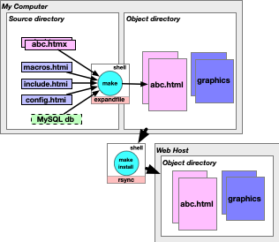

multicians.org Web Site
The Multics website was begun by Tom Van Vleck in 1994, as a way to display the content of the FAQ files for the USENET group alt.os.multics on the new World Wide Web. After over 32 years, the website has grown to 488 HTML files comprising over 540K lines, 670 graphic images, and 1798 PDF files, thanks to the contributions of many Multicians. This page is a guide for editors of the Multicians web pages.
There are PowerPoint Slides describing the site's features.
I have written an article on Creating Computer History Websites with examples from multicians.org. This long essay describes my personal ideas on how and why to build web sites, and uses the evolution of the Multics home page as an example.
The multicians.org web site can be hosted on a basic web server, such as Apache. The site is implemented with static web pages and graphics, and can be viewed with modern web clients on a range of devices.
Since 2001 multicians.org has been hosted at  Pair Networks Inc in Pittsburgh PA.
At various times, mirrors of the site have been hosted on other web servers:
when trans-Atlantic web speeds were low, Dave Vinograd arranged for a site mirror at City University London from 1995 until 2002;
Paul Green mirrored the site at an FTP server at Stratus.com from 1995 to 2017;
and jason andrade mirrored the site at Planet Mirror in Brisbane AU from 2003 to 2008.
None of these mirrors are currently active.
Pair Networks Inc in Pittsburgh PA.
At various times, mirrors of the site have been hosted on other web servers:
when trans-Atlantic web speeds were low, Dave Vinograd arranged for a site mirror at City University London from 1995 until 2002;
Paul Green mirrored the site at an FTP server at Stratus.com from 1995 to 2017;
and jason andrade mirrored the site at Planet Mirror in Brisbane AU from 2003 to 2008.
None of these mirrors are currently active.
2012 Design Changes
-
Design Refresh.
The multicians.org website had a substantial design refresh in Oct-Nov 2012.
All pages were reformatted, in many cases by changing the wrapper macros only.
-
Redesigned home page: wider, more open layout with larger print.
Simplified the home page generation.
Eliminated home-brew indexing, used Google custom search instead.
Removed the random picture picker and its IFRAME, and added a
 JQuery based picture gallery using EasySlider.
Removed a long disorganized list of contents that duplicated the menus.
Many thanks to Lilli Filichia for design and layout advice.
JQuery based picture gallery using EasySlider.
Removed a long disorganized list of contents that duplicated the menus.
Many thanks to Lilli Filichia for design and layout advice.
- Reorganized the menu headings and categories: History, People, Library, Sites, About. Made navigation consistent: the menus are the same on all pages that use them. Moved some pages from Stories to Articles. Eliminated general.html and moved its parts elsewhere, mostly to history.html. Added a "breadcrumbs" path name indicator to every page's headings to help visitors know where they are. Every page with menus has the same menus, providing consistent experience to return visitors.
- Implemented one-level drop-down menus on almost all pages, generated from menubar.sql, shown using JQuery. Used only one level of menus (i.e. no staircase): this reduces the number of times that an unchanged page has to be regnerated. If JavaScript is not enabled, the menu degrades to a single menubar. The tail of every page has links to the other level-two pages in the category, and all pages have links to the top-level category heads, so that there is a path to all pages if the menus are not shown (e.g. in a small window, or when JavaScript is not enabled). These linkage rules also ensure that even if a web crawler does not use sitmemap.xml, it can still discover all pages on the site.
- Converted all pages to HTML5 and checked them with W3 Validator. Improved the layout and loading speed of the Image Gallery and other pages that show many images.
- Created automation for site building and deployment using the Unix make command. A one-line change to a page can be compiled and deployed to the hosting server in about a minute.
-
Redesigned home page: wider, more open layout with larger print.
Simplified the home page generation.
Eliminated home-brew indexing, used Google custom search instead.
Removed the random picture picker and its IFRAME, and added a
-
Mobile Devices.
Google Webmaster Tools informed me that some pages were hard to read on mobile devices.
I fixed most pages in July 2015, and updated the "alternate menu bar" in November 2022.
More work is still needed.
- Item smallscreensize in config2.htmi defines the width of a "small" device screen. It is currently 600px.
-
Pages that can be reformatted to a small device window set the viewport,
and add CSS that hides the JavaScript menus and instead displays an alternate simplified menu bar when the screen is small.
(Smartphones do not support HOVER so the dropdown menus are hard to use on these devices;
the simplified menus don't depend on the feature.
The simplified menus are initially hidden until the user clicks "MENU" -- the hidden state is in an invisible checkbox.)
Most pages were affected by this change: a few page wrappers do not set the viewport because the data is too wide to be reflowed.
- The alternate simplified menu bar for small screens shows the same first and second level headings as the drop-down menus do, except that the Sites menu item does not list the 40 or so site biographies, because the list would be too long for the screen. (The full list of sites is one click away.)
- Some pages, e.g. source code, MTBs, and papers, cannot be reflowed to a small window. For these, we leave the viewport alone and let visitors scroll right or left as necessary. Scanned PDFs of MTBs and conference papers cannot be reflowed, so mtbwrapper.htmi and paperwrapper.htmi do not set the viewport. A few wide pages, like site-timline.html, cannot be reflowed, so widepagewrapper.htmi does not set the viewport.
- For small device windows, the home page multics.html also uses conditional CSS to eliminate some padding and floating of elements.
- Some pages contain tables that cannot be reflowed into a small window. No viewport is set for these. The tables can be viewed by scrolling left and right. Over time these tables should be eliminated. (For example, sites.html replaced a TABLE with a list of DIVs with the use of CSS FLEX.)
- About 80 picture elements are too wide for a small viewport, so they require horizontal scrolling. Eventually I will provide alternate content using CSS. I have a list..
- Tablets and mobile phones do not support HOVER (menus, links). Page designs do not depend on this feature for navigation, though it may be less convenient for a visitor.
- Tablets and mobile phones do not support TITLE to show a tooltip, as is generated for Glossary, page, externa link, and Multicians references. There is no alternate way to provide this info.
Other global changes to the website's HTML are described under "Implementation" below.
Site Design Rules
This section describes the goals and design choices to accomplish these goals for multicians.org.
-
Tone
- This site is about content. The goal is to present the story of Multics for people interested in the system's history, especially Multicians. Humor is OK but excess is not.
- Aim for an informal, yet accurate tone.
- Clearly mark individual opinion and distinguish from verified fact. Prefer first-hand accounts of individual experience.
- Present information with a consistent look and feel.
- Ensure that visitors can navigate to other parts of the site.
- Appearance should be polished but not glitzy.
- Avoid gratuitous animation, sound, background, etc.
- Generative AI
- Any use of AI tools to generate site content must be documented.
-
Audience and goals
- Multicians
- Remember good times.
- Give credit where it is due.
- Support our memories with evidence.
- Students of operating systems
- Learn from failures.
- Learn from successes.
- Point the way forward.
- General public
- Explain what Multics was and why it was important.
- Help with their homework.
- Correct inaccurate statements found on other web pages.
- Historians
- Preserve and provide accurate facts.
- Multicians
-
Content
- Keep high standards: correct spelling, reformat text, enhance photos, use valid HTML5 and CSS.
- Accept and display information given to us by others. Ensure it is not lost.
- Credit every source.
- Keep the site up to date.
- Ensure that intra-site navigation works and is consistent.
- Ask permission before publishing others' writings.
- Inform foreign page owners if linking to them. Check occasionally for dead links.
- Ask permission before adding a person's mail address to the database backing multicians.html.
- Ensure that dates are included in many items, so that the reader understands when each part of the story happened.
-
Avoid judging the value of others' contributions.
- If they say they're a Multician, and made some contribution, list them.
- Privacy. Contributors should understand that their contributions are public and can be read and used by any Web user, and may be archived by web crawlers. In particular, their contributions may be used to train AI language models, which may misquote and distort their original meaning. The only information kept private by this site is the personal email address of registered users.
-
Original documents.
This site is a repository for documents not available elsewhere.
If a document is not available on the web,
- Scan and convert documents to HTML or PDF with OCR text so they are searchable and indexable. (Image-only PDFs are a bad idea.) I was using Adobe Acrobat Pro for OCR: it sometimes produces errors. VueScan is also able to generate OCR text when it writes PDF output. If a better OCR tool can be found, consider re-scanning the PDFs. The pdffonts tool (part of Poppler) will show if a PDF has OCR text.
- Do not attempt to preserve visual fidelity with originals, e.g. two column layout. Concentrate on readability, searchability, and availability for other use.
- Redraw figures if necessary.
- Attempt to secure copyright clearance and permission of author.
MIT MR12.5 source archives
and bitsavers.org,
provide links and finding aids.
-
Pictures
- Pictures interest people. Use plenty.
- Use reasonably small images, for loading speed. Show a bigger version in response to a click for more detail. (Use HTMX macros.)
- Use GIFs or JPGs or PNGs.
- Provide coherent ALT text for images.
- Use high contrast and brightness (pictures get darker on web, gamma may differ).
- Remember that not all systems have same DPI or number of colors.
- Use JPGs for photos. Don't worry about palette conflicts.
- Enhance and resize pictures. See my note on how to use Affinity Photo.
-
Images look blurry on high DPI displays unless more pixels are provided. new
- Use thumbnails with 150x150 image pixels displayed in 75x75 CSS pixel space.
- Where sufficiently large original photos are available, generate -1x and -2x versions of the files and use HTMX macros that can generate SRCSET.
- Ensure that pages that show packed sprite images use -2x graphics. (Main page slider, image galleries.)
- Have JavaScript code that draws charts scale the backing store by window.devicePixelRatio. (piecanvas.js, timelinecanvas.js)
- Use custom (open source by editor) JavaScript functions to draw timelines and pie charts. (piecanvas.js, timelinecanvas.js)
- Store images in subdirectory /mulimg. Sizes may vary. When possible, also have a -2x file with 4x the pixels.
-
Use JavaScript functions to display sliding galleries and image popups.
- Easy-Slider (Alen Grakalic)
- Fancybox (fancyapps.com)
- dhtml-lightbox (editor)
- Store thumbnails in subdirectory /thumbnails150 as 150x150 pixels.
Implementation

-
Compile HTML files statically offline.
- The open source program expandfile translates HTMX (HTML eXtended) source to HTML.
- Static pages are more efficient on the web server. Pages load faster.
- Static pages have a smaller attack surface.
-
Performance goal: have normal pages load to user in less than .5 seconds.
- Longer is OK for huge pages like Multicians list and Bibliography.
- Depends on server speed, connection bandwidth, browser parallelism.
- Affected by user's local connection, user device speed and capacity.
- Factor common elements into HTMX include files for maintenance ease and consistency.
- Generate a page's content from an SQL database table when this simplifies processing and maintenance.
- View the local copy to check all changes before pushing to server. Use a local web server.
- Securely and efficiently update hosting server(s) with one rsync command.
- Avoids forgetting to install part of a change.
- Easy to repair damage if a hosting server loses files.
- Build tables of contents, galleries, graphics, etc. from local SQL database tables using expandfile.
- Warn if files are inconsistent or do not conform to standards.
-
Write legal standard HTML5 that works in current popular browsers.
- Use expandfile to generate as much HTML as possible, in order to avoid errors and provide consistent presentation.
- Keep up with changes in HTML, browser abilities, device usage, visitor wishes .. within reason. Do not reimplement pages with new HTML features unless users benefit.
- Use Cascading Style Sheets (CSS) to specify layout. Modern browsers implement most features according to the standards. Consult caniuse.com if considering a new feature. Use modern features such as sibling selectors and media queries to adapt to multiple screen sizes.
- If a desired behavior can be implemented in CSS or JavaScript, prefer CSS. (Example: the sort-order selector in Multics Stories.) The site should still be useful if a visitor has disabled JavaScript. Also, JavaScript can do more damage to the visitor's computer if the site is hacked.
- Use only one H1 per document.
- Use Hx controls to represent outline structure, not for text format.
- Avoid deprecated and obsolete HTML.
-
Run W3 Validator on every file we control; all pages should validate as HTML5.
Fix all reported problems (if possible).
- The W3 Validator says the COMPACT attribute on DL is obsolete and one should use CSS attributes. Validator output points to a page that does not provide any alternative for it. However, further digging does come up with the substitution <dl style="display: compact"> which works. (Changed all compact lists to new form.)
- Changed the header macros to specify charset=UTF-8 and lang="en" after the Validator started producing warnings about it. Recompiled all pages.
-
W3 Validator and HTML Tidy started complaining about obsolete constructs in March 2017.
Changed all uses of the NAME= attribute on an A element to be an ID= attribute on a nearby container.
Removed the SUMMARY= attribute from TABLE elements.
Replaced ALIGN= on TD and TH elements with CLASS= and a CSS style.
- W3 Validator started complaining about more obsolete constructions in July 2019. Removed TYPE="text/javascript" from SCRIPT tags and TYPE="text/css" from STYLE tags in the header macros, and recompiled all pages.
-
Check pages with Chrome's "Inspect Elements" tool and run the "Audits" (Lighthouse) report,
or invoke https://pagespeed.web.dev
and the EXPERTE.com accessibility checker.
- Chrome's browser console should show no errors.
- Performance should be 100. Most pages (except the very big ones) should load in less than .5 second. (Moved site to an all-SSD virtual server in 2023. Initial server response is 50ms.)
- Accessibility should be 100. (Changed colors for better contrast, improved ALT text and labels in 2024.)
- Best Practices should be 98-100. (Web.Dev complains that a clear pixel gif is "low res.")
- SEO should be 98-100.
-
Run a link checker such as Integrity Plus a few times a year to look for dead links.
- If an error is caused by a typo in our source, fix it.
- If a Multician's home page is not found, send the person mail asking if the link should be removed.
- If an external page pointed to by the Bibliography or by loadext.sql is not found, search the Web for a better link, and update the SQL source.
- A few pages get warnings from HTML Tidy or the Validator for reasons we cannot control, such as the code supplied by Google for its search box. (They seem to work OK though.)
- Although modern browsers do not support the zoom: 1 CSS attribute or the *html CSS selector, we continue to use them because they solved MSIE problems. I plan to remove this someday. (As of 2024, 1.5% of visits say they are from MSIE, but some of these may be crawlers lying about their agent.)
-
Support accessibility: be usable by text-only browsers and non-image-loaders. For example,
- Support keyboard navigation as well as pointer navigation.
- Graphic images should have useful ALT= text
- Do not use tables for layout (like we did in the 90s). Use CSS for formatting and layout.
- Degrade gracefully, e. g. still show useful info if JavaScript is off.
- Perform ARIA accessibility checks and try to solve issues: e.g. ensure elements have distinct labels.
- Include ARIA landmarks for navigation elements.
- Adjust colors if necessary to support contrast: e.g. white text on "red" background is difficult for some users, use #cc0000 for red.
- Ensure that CHECKBOX items have a LABEL, even if hidden.
Principles of Web Accessiblity.
-
Avoid proprietary formats.
- Convert Word, RTF, etc to HTML.
- Convert PowerPoint, etc to PDF with OCR text.
- Make tools such as expandfile and MxLOAD open source.
-
Look good in most browsers.
Look as good as possible in Mozilla, Chrome, Safari, Firefox, and Edge.
- Don't use features that make the page unintelligible in many browsers, e.g. ActiveX.
- Pass Google Mobile friendliness criteria wherever possible.
- Use JQuery drop-down navigation menus on most pages (for non-small screens).
- Do not use HTML produced by MSWord "Save as HTML." It's full of constructs that only work right on MSIE.
- On average, 48% of hits are from Chrome, 5% from MSIE, 18% from Mozilla, 10% mobile, 5% Safari (7/2020).
- Use MSIE conditional expressions to compensate for its non-standard behavior (example: CANVAS support). Planning to remove this.
-
Display as fast as possible. Vistors will abandon a slow page.
- Every IMG should have HEIGHT and WIDTH, obtained from the image if possible. This allows layout to continue before the image finishes loading. The image generating macros in htmxlib.htmi run a helper program to get this information.
- Use small to medium graphic images. See high DPI displays.
- Layout can complete before a background image loads. Using this feature allows a page to become visible faster. This method is used with the image gallery page... see CSS Sprites.
- GIFs larger than icon size should be interlaced.
- Break HTML files >50K into smaller ones, if this can be done without inconvenience to the reader. (Multicians list, bibliography, source index are all kept integral because having things in one place is more useful than having a file that loads quickly. The glossary, on the other hand, is broken into a file per letter.).
- For gallery pages with many images, automatically generate a packed JPG combining the graphics, with CSS sprite definitions and HTML references to a 1px transparent GIF with the images as background, so that the page completes layout and shows initial display quickly, and there is only one OPEN operation for all images. This strategy decreases page load time dramatically.
- Avoid too many separate graphic images on a page. (The first time a page gets slashdotted and you see one hit for the page, and 20 for decorative graphics, will teach a lesson.)
- I have not tried data: URIs to eliminate graphic loading. (Inline data: URIs would conflict with Content-Security-Policy. See "Security" below.)
-
Add statements to the web server configuration .htaccess to speed up page loading by compressing text files, e.g.
AddOutputFilterByType DEFLATE text/html text/plain text/css text/javascript text/xml application/javascript
-
Add statements to the web server configuration to speed up page loading
by setting a longer caching time., e.g.
# 48 months for things that never change
<filesMatch "(favicon.ico|multics-redblack50x50.gif|pdf5.gif|clearpix.gif|tinyglob.gif)$">
Header set Cache-Control "max-age=29030400, public"
</filesMatch>
# 24 hours for things that rarely change
<filesMatch "(sliderpack.jpg|mxstyle.cs)$">
Header set Cache-Control "max-age=28800, public"
</filesMatch>
-
Don't require plugins or client side execution.
- No shockwave, Flash, etc (security exposure; requires plugin on most browsers).
- No ActiveX (security exposure; won't work with non-Microsoft browsers).
- No Java (many systems disable it due to security issues, startup is slow).
- JavaScript is allowed if the page is still usable when it is turned off (visitors may disable). Stick to features available on most browsers. (Uses: menu drop-downs (jQuery), picture sliders and light boxes (jQuery), validation of mail form submission (custom NOSCRIPT), custom AJAX in Multicians list signup form.)
- The jQuery JavaScript library is acceptable (used on >50% of commerce sites). It simplifies browser variation coding and provides support for picture galleries and drop-down menus. The site uses only a few simple jQuery functions.
- CSS is used, and can do some slick things, but a page invoking it has to be usable if the feature is disabled. For instance, Multics Stories makes only one of three differently-sorted tables visible depending on a radio button for the sort order. If the ~ CSS selector is not working, all three should display.
- No rollovers (bandwidth, gratuitous, won't work on tablets and phones).
- Do not use externally provided JavaScript, such as Google Analytics or other tracking code. We used to include a Facebook 'like' button but removed it, partly because there were reports of Facebook using the cookie for visitor tracking. Exception: the Google Custom Search button on the search page is still used. Visitors who perform Google searches can expect that Google will know they did so.
- Don't store data or cookies in the user's browser. Exception: a user sending mail to a Multician may request that their return mail address be saved in a cookie.
-
Make the site as secure as possible.
Keep it from being impersonated, hacked, or defaced;
make sure it cannot be tricked into infecting visitors.
- Use HTTPS for all Web access, so that pages are not altered in transit. Force HTTPS if accessed via HTTP. Only use HTTPS URLs.
- Serve static pages and minimize server side computation on page display.
- Ensure that resources on the ISP host are read-only whenever possible.
- Secure the login account at the ISP host. Only use SSL with private keys to move data to the account and log into it.
- Check arguments to CGI programs to prevent XSS and SQL injection attacks ("Bobby Tables"). Blacklist attackers.
- Use CGIWRAP with CGIs that access database tables, to control access to data.
- Avoid the use of Java and Flash. Use JavaScript conservatively.
- Do not provide features that accept visitor-supplied data without human approval. This prevents cross site scripting attacks, Shellshock attacks, spam and ad injection, and stupidity amplification.
- Add headers sent with each page to web server configuration that advise visitor browsers to protect against Cross-Site Scripting (XSS) attacks. Content-Security-Policy, Strict-Transport-Security, X-Content-Type-Options, X-Frame-Options, X-XSS-Protection. (This margin is too small to discuss the full complexity, benefits, and drawbacks of these measures. See https://observatory.mozilla.org/.)
- For external pages, opened with target="_blank", include rel="noopener" to prevent the opened page from navigating the opening page to a new URL. This is faster and more secure.
-
Links
- Use descriptive link text. Indexers like Google use the anchor text to guide searches.
- Links offsite should be preceded by an icon and have a descriptive TITLE and open in a new window. Use the brace-exclamation syntax to generate links via the extref table (loaded by loadext.sql), (over 450 such links are used in the site) or invoke the HTMX macros bitsaversmultics, mitsourcearc, mitsourcefile, or mitinfoseg. (about 200 such links are used in the site). Exceptions: outbound links from multicians.html and biblio.html are generated by the page template. (About 1400 such links are used in the site.)
- Internal links to website files should have a TITLE attribute generated by the brace-at syntax via the pages table (loaded by loadpages.sql). (Over 1200 such links are used in the site.)
- If an article refers to items listed in the Multics bibliography, the HTMX macros bibliolink or bibliolink2 or mtblink1 or mtblink2 should be used to fetch information from the biblio table (loaded by loadbib.sql), so that there is only one place to update. (Over 180 such links are used in the site.)
- Links to glossary entries should have a TITLE attribute generated by the brace-brace syntax via the mgloss table (loaded by mgloss.sql). (Over 2300 such links are used in the site.)
- Links to Multicians' entries in the list of Multicians should have a TITLE attribute generated by the brace-bracket syntax via the m table (loaded by loadm.sql). (Over 1500 such links are used in the site.)
-
Help visitor find what's new or interesting
- Provide a date modified in heading at the top of every page. The macros use "date content modified" from the pages table if it is supplied, so that minor maintenance does not mislead visitors. The "date file modified" of the HTMX file is used if this field is empty.
- Flag new items with a new flag, updated ones with updated . (Done with CSS-styled text to save an image load.)
- Maintain the change log by editing loadc.sql, which generates the Changes page and also a list of the five most recent changes included in the main page; generates an RSS feed describing recent changes; generates an XML site map for the Google crawler; and causes the HTML site map to be updated.
-
Cross-link pages
- Links should add to the reading and understanding experience.
- In general, don't link to the same target more than once from the same area on a page. For instance, the Changes page links to each modified page once, not once for each change.
- Link terms to the Glossary.
- Link names to the Multicians list.
- Link to other pages as possible.
-
Be portable
- The entire website can be mirrored on multiple servers. Clicking on a link should not jump over to a different server.
- Use relative links for intra-site links. Do not use https:// style HREF attributes. Do not use www. when referring to multicians.org.
- Compiling the object HTML from source should also be portable to different servers. Put local configuration in a separate include for the Makefile.
- Some source file subdirectories link upward to the parent. Use symbolic relative links for these.
- Be aware that hardlinks in the original may become separate copies. Ensure that maintenance strategies do not lead to these copies diverging.
- Makefiles provide a relative path to the object directory. This path must be adjusted when building test versions or porting to other locations.
-
Respect visitor options
You can't control what visitors' browsers do with your page.
(And you shouldn't try.)
It's not like designing for print.
- Visitor preference settings. Support visitors' ability to zoom in or out, zoom text separately from graphics, choose default fonts, select display parameters such as smoothing and sharpening, set background and text colors, or change contrast and brightness. Font sizes should be specified as percentages of the base font size, rather than as fixed numbers.
- Accessibility. Some browsers don't display images at all, and visitors are dependent on ALT and TITLE tags to understand what images represent. (I am currently working on adding ALT text to the picture database and including the text in IMG tags.) Other visitors may magnify text or alter colors to make a page easier for them to read.
- Bandwidth. Early web pages used many strategies to make pages work well on slow connections. As more and more visitors used broadband, these methods were less emphasized. The introduction of mobile devices that sometimes have slow connections and smaller screens re-introduced old requirements and added new ones.
- Window size. Page design has to adapt to large and small window sizes. Elements with a fixed size in pixels will be cut off if they don't fit in the window: in some cases visitors can scroll to see the whole content, and in other cases it's just hidden. Some pages use CSS media queries to test the window size, and to show or hide elements or choose different sized graphics depending on window size. Standard multicians.org pages show an alternate top menu for small window sizes.
- Layout. When designing a page to adapt to varying window sizes, some HTML elements work better than others: FLOAT will fail gracefully while TABLE cuts off content on a small window. You can't count on having an object with a width specified as a number of pixels matching up with text sized by number of characters. Browser layout algorithms vary, and there are also layout bugs in some browsers that require ugly browser hacks, so you must test with many combinations. In the 90s, people used "spacer GIFs" and tables to try to force layout: this approach has been abandoned.
- Fonts. A visitor's browser may not have the same fonts as your machine. Don't count on fonts being available for layout. You can say something like "Arial,Helvetica,Sans-serif" to prefer one font but fall back if it is not there. The same named font may display quite differently on different devices.
- Device characteristics. Design to make best use of a visitor's device. Adapting to high DPI displays is one example mentioned above.
- Colors. Many hardware and software factors influence the way colors are displayed. Visitors' displays may vary in brightness, contrast, color cast, and number of colors displayable. A picture that looks good to you may be unintelligible or ugly when someone else views it. Test.
-
Many pages will be found by search engines.
"Every page is a front page."
- Make sure every page is self-explanatory, so a visitor knows what it is part of and what it's about. Visitors will enter the site at many places besides the front page, and need context.
- Include a META KEYWORDS and META DESCRIPTION on every page, to ensure that the search engines point to the pages they should and to give a visitor an idea of what is on the page. Use unique TITLE tags and descriptions so that search results are understandable. Google Webmaster Tools will detect these problems and warn you: use these tools.
- Ensure that navigation is rich: from every page, one should be able to find the pages a reader might want to go to next, especially the site home page. Provide navigation features on all pages that will let the user find out what else is on the site. Use the link-generation HTMX constructs to link to related pages on the site: Also link concepts to the glossary, sites to site biographies, people to their Multicians entry. Use the bibliolink macros to link to papers, manuals, and other documentation. Use the mitsource macros to link to actual source and to .info segments.
- The classification of content and the navigation menus that implement it should be the same on every page on the site. (Otherwise, visitors can be frustrated trying to re-find the link to a page they found before.) The drop-down and alternate menus are generated from a single SQL file, menubar.sql, and used by all the page wrappers that display menus. This has the side effect that adding one menu item anywhere requires the recompilation of almost all pages on the site. So what, consistency is worth it.
-
Use Cascading Style Sheets (CSS)
- Use HTML for structure, CSS for layout. For example, don't use extra P or BR tags for layout: place the item in a container with a CLASS attribute and control the class's layout. (This page is an example. The spacing after top-level LI tags is done via a CLASS attribute and a CSS definition.)
- Tag items with semantic attributes, e.g. pathname, webpage, toplevel, rather than presentation attributes like bold or tiny.
- The vast majority of the (non-indexer) hits on the site are from CSS capable browsers. Make sure every page is intelligible with and without CSS, and use HTML to ensure robots can understand your page structure.
- All pages should use the standard mxstyle.css. Styles that pertain to a single page should be in a CSS file named for the page, rather than a CSS STYLE block, which counts as "inline" and is less secure.
- Don't use FONT FACE attribute (deprecated). Instead, define a CSS class and use a SPAN attribute that refers to the class.
- Avoid the use of inline STYLE= attributes, and instead refer to CSS loaded from a file. This is more secure.
- Some CSS features don't work in all browsers. Stick to those that work in Mozilla, Chrome, and Edge. Consult CanIUse.com to see what features work on what versions.
-
CSS hacks may be needed to enable good presentation.
Restrict these, keep then in a few include files only, and check them when new browsers are released or old ones deprecated.
- Microsoft Internet Explorer (MSIE) had many problems. MS is ending support, and I plan to remove the hacks that make it work.
- Currently the site uses the !IMPORTANT attribute, ignored by MSIE, to mark values for Firefox and Opera, followed by the MSIE value. This construction works for MSIE 5-7 in Quirks mode.
- The major problem with MSIE layout (for versions < 9) is its incorrect calculation of box width and height; MSIE includes the border and padding of items in the value, so the MSIE size should be bigger for padded items.
- MSIE also does not support MAX-WIDTH, used to control page width.
- Check printing a web page as well as displaying it. Some browsers display OK but mess up on printing. A PRINT style is set in mxstyle.css that suppresses the printing of navigation elements.
-
Support for video
- Most web servers do not support streaming video. The multicians.org site's servers do not support this feature.
- Without streaming support, a large video file on the site will take a long time to send the whole file before it starts playing.
- A better way is to embed an IFRAME in the page that points to the video file at another site, e.g. YouTube.
- Bibliography entries can point to YouTube videos. There is also a "Multicians" YouTube playlist set up by Gary Dixon.
-
Avoid Frames, except IFRAMEs for video embedding.
- Frames are not part of HTML 5.
- Navigation on frame pages is confusing or buggy in some browsers.
- Framed pages need extra care to make sure there's no route that shows them unframed.
- Only IFRAME pages you trust. Set the sandbox= attribute of IFRAMEs to control JavaScript, origin, forms, pointers, popups, etc.
-
Avoid animation, except
- Interesting technical use
- JavaScript slider effect for pictures on main page
-
Page Classes.
The site has four classes of pages, defined by the page wrappers:
- Class 1: head page. Black box at top with logo, drop down menu nav just below. Dropdown menus and alternate menu are generated from menubar.sql. Since many visitors never scroll down, the content is kept brief. A picture slider shows highlights and attempts to draw visitors deeper into the site. Mail link to site editor at bottom of page.
- Class 2: article page. Black box at top with logo, red menu bar with drop down menu navigation just below. Compiled from HTMX. Dropdown menus and alternate menu are generated from menubar.sql. For pages with a list of things, put the total count of items in col 3 of the standard header, below the date. These pages are formatted via the wrapper macros described below, including tail navigation to the five L1 pages at the bottom of the page, and links to the other L2 pages in the category, so that if JavaScript is off, visitors can still access all pages. Additional tail navigation to the "next story" if defined in the pages table. Additional tail links may be supplied in extratail block. Wrapper also provides a mail link to site editor at bottom of page.
- Class 3: paper, story, etc, formatted by editor, compiled from HTMX. No menus or logo at top. Tail navigation as for Class 2. Mail link to site editor at bottom of page.
- Class 4: formatting supplied by some other author. Not compiled from HTMX. Added tail navigation as for Class 2-3. Optionally add mxstyle.css if supplied page will look OK with site standard fonts. Mail link to site editor at bottom of page.
-
Use consistent spelling and orthography.
- Unix, not UNIX (except in direct quotes and titles of books, etc). Source: Dennis Ritchie.
- Database vs data base: both occur, should decide.
- Time-sharing vs timesharing: both occur, prefer hyphen unless title of book, paper, etc.
- Online vs on-line: both occur, prefer hyphen.
- Mail vs e-mail vs email: all occur, should decide.
-
Do not suck.
- No Ads.
- No blinking text.
- No mystery navigation.
Vincent Flanders' advice.
Each page's organization
- Each page has a TITLE and H1 (generated by macros).
- Each page has ADDRESS containing a link to editor (generated by macros).
- Record content changes in changes.html with date (generated from loadc.sql).
- Title of page and H1 should be self explanatory.
- All pages have white background, black text from style sheet.
-
Almost all pages have all content inside a DIV with MAX-WIDTH set by an include file,
to maintain readability on wide monitors.
The content is also centered on the screen. A CSS hack ensures that a fixed width is provided for MSIE,
which does not recognize MAX-WIDTH.
Since tables are not used for width control, the pages print correctly and display OK in small windows.
(Check that this still works as new browsers are announced.)
- Exception: very long and wide pages, such as the Multicians list.
- Navigation
- Link to head page and all tier 1 pages always provided. Red menu bar is used almost everywhere.
- glossary: alphabetical index, list of topics, forward link.
- Pages with a single author list it at top.
- Date modified at bottom for story pages.
- Mail link for editor at bottom of each page uses the mail form sending mechanism described below.
Organization of Categories
The red menu bar at the top of most Multics pages shows six categories.
-
The Home Page introduces the site. Visitors can get back to it from any other page.
- General description of Multics.
- Site contents.
- Announcements and milestones.
- Picture slider: pictures link to important pages. Pictures are all 300x244 CSS pixels (600x488 image pixels) and are listed in home-slider.sql. Automatically generates sliderpack.jpg combining the slider graphics, and creates CSS sprite definitions and HTML references to 1px GIFs with the images as background.
- Changes box showing 5 most recent changes, updated when changes page is updated.
-
The History category contains historical information, including
- History of Multics (tier 2 page)
- xref people to multicians.html.
- xref terms to glossary.
- xref sites to glossary.
- Features of Multics (tier 2 page)
- xref people to multicians.html.
- xref terms to glossary.
- xref sites to glossary.
- Myths About Multics 23 myths (tier 2 page)
- xref people to multicians.html.
- xref terms to glossary.
- xref sites to glossary.
- History of Project MAC Narrative history of Project MAC. Split out from History. (tier 2 page)
- Dates (tier 2 page)
- significant dates. Non-Multics events in italics. Loaded from chrono.sql. Thumbnail decorations from chrono2.sql.
- site histories: every date for this site.
- Also site-timeline.html: every date for every site, plus a few major events.
- Glossary (tier 2 page with one line per entry, 26 tier 3 pages one per letter, generated from g1.sql)
- xref people to multicians.html.
- xref terms to glossary.
- xref sites to glossary.
- terms not beginning with a letter go in mga.html.
- long articles go elsewhere: link to them from glossary, e.g. descriptions of features go in features.html, and glossary should have a short summary and a link.
- Multics History Project activities and results
- Letter from Corby when the last site shut down (10/30/00)
- History of Multics (tier 2 page)
-
The People category provides information about 2059 Multicians.
- Multicians (tier 2 page, generated from loadm.sql) Almost 600K.
- don't xref terms to glossary, makes it too big.
- don't xref sites, makes it too big.
- Mail links invoke a CGI that generates a mail form sending page.
- Form submission invokes a mail-sending CGI, which enforces anti-abuse restrictions.
- The mail-sending CGI sends to the receiver's mail address from the m table on www.multicians.org.
- Multics Stories (tier 2 page)
- TOCs for 86 stories (tier 3 pages), automatically generated from loadpages.sql.
- Links to each story.
- Individual stories each have a class 2, 3 or 4 file. Special "nextstory" navigation at bottom of individual stories, generates a path through all in chronological order. Be careful not to break this. Classes 2 and 3 xref people, terms, sites.
- Clever CSS magic to show only one of data/author/site TOCs at a time, controlled by radio button.
- People Pictures (tier 3 page, generated from multhumbs.sql)
- Thumbnail gallery of 127 Multicians: a click shows a larger picture (using fancybox).
- 150x150 image pixels, generated using gth2x script, displayed in 75x75 CSS space.
- Fluid layout.
- Lists other pages that have galleries of Multicians (e.g. Picnics). Generating People Pictures page counts the fancybox popups on those other pages and includes that in the People Pictures listing for the page. Some pages have images that are not displayed by fancybox: count those manually.
- Generated from multhumbs.sql, the same SQL database that generates the image Gallery, showing sections for places where Multicians worked. The gallery column in the multhumbs database lists the section in People Pictures.
- Multics Humor Funny stories about Multics and Multicians. (tier 2 page)
- Multics Memorabilia Physical objects from Multics history. (tier 2 page)
- Multicians (tier 2 page, generated from loadm.sql) Almost 600K.
-
The Library category contains reference information hosted at the site.
- Bibliography 5067 documents (tier 2 page, generated from loadbib.sql) Almmost 500K.
- don't xref people, terms, sites (too big).
- If a referenced paper is online, link to it (globe for external links). Prefer original sources or permanent archive external sites.
- Prefer HTML or TXT files to PDF (because of OCR errors).
- When multiple revisions are available, show only the latest (storage space).
- Papers Information for 46 published papers. (tier 2 page)
- Chronological order, with DL linking to and describing paper.
- links to each paper give size, date, #pictures.
- individual papers xref people, terms, sites.
- If a referenced paper is online, link to it (globe for external links).
- If you add a paper, remember to also add it to loadpages.sql and loadbib.sql
- Articles 31 local articles. (tier 2 page generated from loadbib.sql)
- Technical articles about Multics features, not elsewhere published.
- links to each doc give size, date.
- individual docs xref people, terms, sites.
- Development documents (tier 2 page)
- Section for each document type, with DL linking to and describing docs.
- links to each doc give size, date, #pictures.
- individual docs xref people, terms, sites.
- Multics Source History of Multics source, pointer to MIT repository, link to source index (tier 2 page)
- Multics Simulator describes the status of the Multics simulator (tier 2 page)
- Bibliography 5067 documents (tier 2 page, generated from loadbib.sql) Almmost 500K.
-
Sites contains information about sites that ran Multics.
-
Sites (sites.html) Information for 84 sites. (tier 2 page, generated from loadsites.sql)
- link to glossary if any info, link to site history if exists.
- site histories: long stories, link to external site.
- glossary: link to external site, link to site history if exists.
- Site Timeline graphical presentation of site dates. (tier 2 page, generated from site-timeline.txt)
- 34 site biographies.
-
Sites (sites.html) Information for 84 sites. (tier 2 page, generated from loadsites.sql)
-
The About category describes the website itself, and Multics today.
- About The Website (tier 2 page) General "about us" information@}
- Changes one line per change. (tier 3 page, generated from loadc.sql)
- Link to file that changed generated by template.
- List counts for multicians, bibliography, glossary, sites.
- Current year only; prior years go into changes-old.html
- Links (tier 3 page)
- Sections for different classes of offsite links.
- Use loadext.sql to create external links.
- Offsite links may also be placed in other documents; use judgment whether to duplicate on the links page.
- Do not duplicate homepage links for Multicians on the links page.
- News (tier 3 page)
- News events other than website news.
- Image Gallery 670 images (tier 3 page, generated from multhumbs.sql)
- Thumbnails of images on the site, linking to the pages where they are used.
- 150x150 image pixels, generated using gth2x script, displayed in 75x75 CSS space.
- Fluid layout.
- Automatically generates an image file thumbspack.jpg of combined thumbnails, and creates CSS sprite definitions and HTML references to the images, so that the page loads quickly.
- Site Map (tier 3 page, generated from loadpages.sql)
- One entry for each page on the site.
Low-Level Implementation
- Data Storage. On the web server, store each HTML page in a file-system .html file (rather than, say, fetching its parts from a database and assembling them on the fly). This approach is fast and simple, robust, and can take advantage of file system and web server performance engineering. In the source directory, store the source of each page in a file-system .htmx file that may refer to include files to generate the .html.
-
Use of MySQL. Data that is presented in multiple ways is stored on the source computer in a text .sql file that drops and re-creates one or more MySQL tables. This approach means that the at-rest version of the data on the source computer is in text files, not MySQL; thus, reinstalling MySQL or the operating system need not dump and restore the database. It also makes it easy to change table definitions if new columns are needed. About 15 SQL tables are used to generate the site. I currently use version 8.0.32 on my Mac (as of Ventura), and MariaDB on Linux.
Every time an .sql file is changed, the Makefile reloads it into the source computer's MySQL database. expandfile's *sqlloop builtin expands templates for each row returned by SQL queries.
For some complex pages, *sqlloop is used by a template file that generates a .htmx file, which is then expanded to .html. For example, the Bibliography page is generated by expanding biblio.htmt, which invokes sqlloop for each section, and writes out biblio.htmx, which is then expanded by the standard rule for .htmx files to create biblio.html. The shell script checkbib.sh is invoked by make to ensure that foreign key relationships between bibliography and Multicians tables are satisfied: if errors are indicated, fix them before installing.
- The SQL features used in the site implementation are not sophisticated: any version of MySQL from 5.7 to 8.0 will work.
- *sqlloop uses the Perl DBI module, which can obtain the actual list of columns and their values returned for each query row. HTMX variables set by *sqlloop have the form tablename.colname. There is an implicit coupling between the MySQL queries and the HTMX code that uses variables set by executing the query.
- A few queries had to be rewritten when MySQL tightened restrictions on queries as new versions were released. No Multicians query had to be changed when MySQL 8 changed the default for ONLY_FULL_GROUP_BY.
- Current .sql files do not declare FOREIGN KEY relationships between tables. Perl scripts invoked by the Makefile check for some missing rows.
-
Use of Perl.
- expandfile is written in Perl and uses CPAN modules. See Internals of expandfile. Version 5.34 or later of Perl is recommended. I try to be conservative in my use of CPAN modules and language features.
- A few other Perl programs are used to create specific .htmx files, such as printmulticians3.pl, printgloss3.pl, and gen_site_timeline.pl. These could be replaced with expandfile templates.
- There are also about about twenty small utility Perl programs in $HOME/bin, some invoked by the Makefile or shell scripts, and others invoked by the *shell builtin of expandfile. These are stored in the directory mxs/tools.
Mail-related Web Services
Mail to Multicians
The web site provides links to send mail to Multicians who have registered their mail address with the site administrator. In order to prevent spammers from harvesting the mail addresses, the mail is composed and sent using CGI programs that run only on the "mail host," currently multicians.org.
Links to send mail to Multicians are found in the page multicians.html and in the tail matter of pages. These links invoke a CGI program, written in Perl, on the configured mail host that generates an HTML page with a form for typing and sending the message. The page includes a randomly generated challenge question to use as a "human interaction proof."
The mail composition form CGI checks the IP and referrer of the page that invoked it, and returns an error if the form is used from an IP that does not officially host the site. The form CGI does other consistency checks to try to filter out spurious invocations: it rejects apparent attempts to send junk mail. The generated form does not contain the mail address of the intended Multician recipient.
Clicking SEND to submit the mail composition form invokes a second CGI on the mail host. This CGI does additional consistency checks to try to filter out spurious invocations, and checks that the response provided by the visitor to the challenge question is correct. The outgoing message is rejected if it appears to be spam, or if a sender appears to be sending too many messages. The CGI then looks up the recipient name in an SQL database on the mail host that contains the protected mail address, formats and sends the mail message, and generates and displays to the sender a confirmation HTML page.
Spam Protection
gmail.com started rejecting mail messages sent by CGIs at multicians.org in February 2024, because the messages did not have DKIM headers. The multicians.org mail sending machinery was changed to include DKIM and SPF records in the mail headers.
At that time, 72 Multicians had registered mail addresses at multicians.org and have their messages forwarded to their private addresses via a procmail script running on the mail host.
Registering Multicians
The web site provides a web form for Multicians to register themselves on, or update their entry in, the page multicians.html. This form invokes a CGI program running on the mail host that checks the form content and sends mail to the site editor, who verifies the information and manually updates the SQL source for the database of Multicians and their addresses. The registration page looks up partial Multician names in an online SQL database using an Ajax request to make updating the form convenient for visitors. The Ajax return value does not reveal the Multician's mail address: it just says "(on file)" if the database has a nonempty value. After sending mail to the editor, the registration CGI displays a confirmation HTML page.
Wish list, future tasks
-
Known bugs (Running Integrity on the site finds some of these)
- Subdirectory pages have a magnifying glass in the header. It does not link to "../gsearch.html" as it should.
- Some TVV pages link to a href="../thvv/something", should fix.
-
PDF files on the site are scanned, OCR'd images of original documents.
If a visitor finds one of these files via a web search, they have no indication
that the file is part of multicians.org or how to find related documents or context.
I wish we could modify all such PDFs to add simple banners to each document.
At least Multics logo, document title, and link to home page at top.
Maybe also a link to the relevant TOC at bottom to find siblings.
Maybe I could find a way to script the Apple Preview app.
https://pspdfkit.com/blog/2019/insert-image-into-pdf-with-swift/ may help.
- Conference papers
- MSPM sections and MTBs scanned by Multics History Project
-
Pages to write
- hardware page
- architecture page
- Comparison between Multics and Unix
- Security stories (point to Saltzer & Kaashoek)
- Make more dependencies explicit in Makefile.
- Write management tools to do maintenance tasks:
- Add/update Multician entry in m and mmail (checking mail address and url)
- Add document to biblio, linking authors to m via aka (operate on db table and then dump it to ASCII with mysqldump)
- Add a new page, updating pages (run HTML Tidy, then transform to create .htmx source using page wrapper)
- Add new story, updating pages
- Add new glossary entry (scan the entry for possible crosslinks)
- Add/update offsite link (checking that it's there)
- Add image (make thumbnail, add to multhumbs.sql; make -2x file and add to /mulimg)
- Check external URLs and mail addresses for validity.
- Check for extra and missing files.
- Run W3 validator on all HTML.
- Figure out discipline for multiple site contributors and editors.
- Use Multics model, i.e. maintainer pull, not contributor push.
- Use GitHub for public repository of source pages: with pull requests, voting, etc.
- Editors approve pull requests.
- Site Builders integrate approved changes into site.
- Misc Future Tasks
- The installed FancyBox.js is old and out of date. The new one needs a license. Tried it out.. did not work. Find out why.
- Pictures displayed with FancyBox look odd in some browsers.. the popup panel covers the browser window, not the web page.
- Could rewrite the dropdown menus to use CSS instead of JavaScript and JQuery. One less dependency, faster
- Use an SVG file of the Multics Logo.
- Implement tinyglob, tinypdf, tinymultics as sprites, for performance. Make this an expandfile macro.
- Find methods to eliminate JQuery entirely. We load a big file but only use a few features.
Details
Detailed instructions for maintenance tasks for multicians.org are listed in Maintenance tasks for the Multicians Website.
Details about the site build process and tools for multicians.org are listed in Build process for the Multicians Website.
Details about how to install the site tools for multicians.org are in Maintainer tools for the multicians.org website.